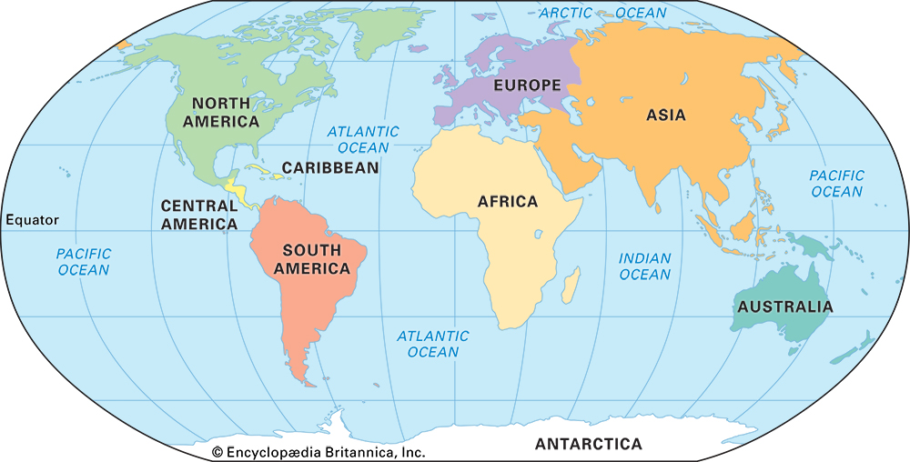

Lets take a tour of 7 Continents

What is Continent:-
The huge landmasses that are scattered all around the globe.
There are total of 7 continents:-
History of continents:- According to Wegener's theory, Earth's continents once formed a single, giant landmass, which he called Pangaea. Over millions of years, Pangaea slowly broke apart due to the movements of Tectonic plates, eventually forming the continents as they are today.
1.Asia
2.North America
3.Europe
4.Africa
5.South America
6.Antartica
7.Australia
*There are total of 195 countries all over the world.
*Continents does not have such an amazing history but the future of continents is amazing, uhh, by future it actually meant the present.